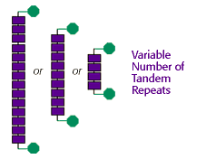

DNA Forensics Problem Set 2
Problem 2: The variation of VNTRs
The VNTR alleles analyzed in forensic DNA fingerprinting experiments are highly variable from individual to individual. How do the many VNTR alleles at a single locus differ from each other?
Tutorial
VNTR: Variable Number of Tandem Repeats|
As the acronym for VNTR suggests, the variability or differences in VNTR alleles are in the "number of tandem repeats." A tandem repeat is a short sequence of DNA that is repeated in a head-to-tail fashion at a specific chromosomal locus. Tandem repeats are interspersed throughout the human genome. Some sequences are found at only one site -- a single locus -- in the human genome. For many tandem repeats, the number of repeated units vary between individuals. Such loci are termed VNTRs. One VNTR in humans is a 17 bp sequence of DNA repeated between 70 and 450 times in the genome. The total number of base pairs at this locus could vary from 1190 to 7650. |
 |


The Biology Project
University of Arizona
Tuesday, August 20, 1996
Contact the Development Team
http://www.biology.arizona.edu
All contents copyright © 1996. All rights reserved.